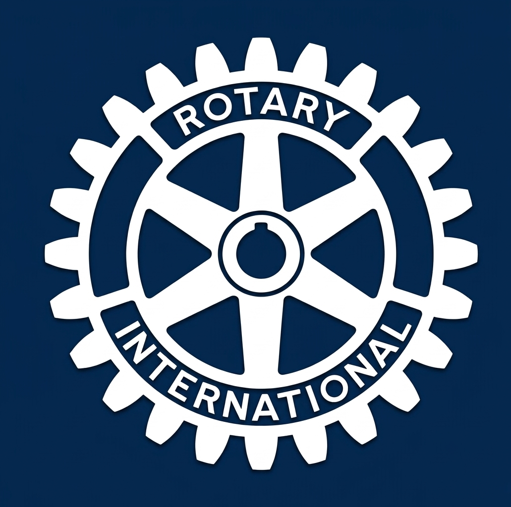

Our roots, our district, and the office bearers who run Gang 51.

Rotary brings together business and professional leaders from around the world who volunteer their time and skills to tackle community and global challenges. Our club operates as part of this larger network, channeling that same spirit of service into local action.
Read MoreRotary traces its roots to a small gathering of professionals in early-1900s Chicago, an idea that soon spread across cities and, within a few years, across borders. Decades later, that same spirit gave rise to Rotaract, a youth-focused extension of Rotary's mission, with its first clubs forming in the late 1960s — including some of the earliest chapters in India.
Rotaract brings together young people to grow personally and professionally while serving their communities, built on the idea that collective effort achieves far more than any one person alone. Our club sits within Region 7 (South Asia), and District 3206, which spans Coimbatore and Palakkad.
We're proud to be paired with several sister clubs across the district:
Of the things we think, say, or do: